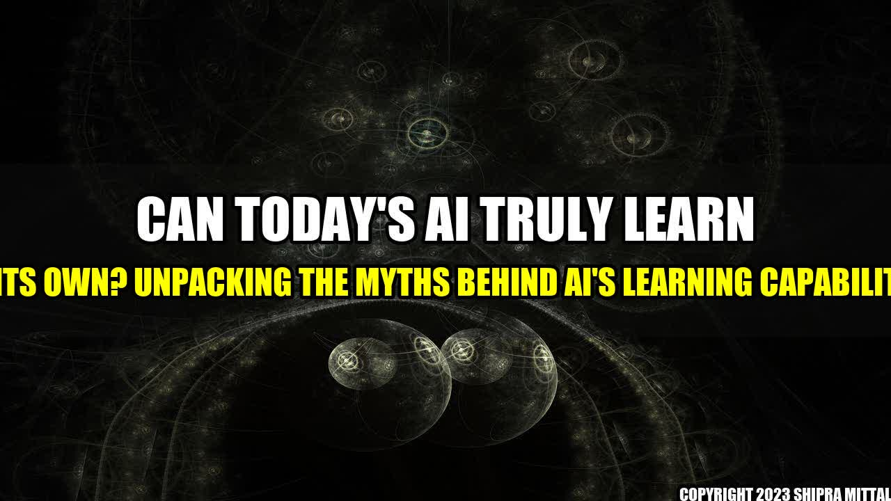

Can Today's AI Truly Learn on Its Own? Unpacking the Myths Behind AI's Learning Capabilities

It seems like every day we hear about a new breakthrough in artificial intelligence (AI) that promises to revolutionize the way we live and work. And while some of these advances are truly impressive, there is a common misconception that today's AI can learn on its own.
But is this really the case?
Setting the Scene: A Narrative on AI's Learning Capabilities
Let's imagine a scenario:
You're a software engineer at a cutting-edge AI company. Your team has just finished developing a new AI model that is designed to classify images of different kinds of food. The AI is trained on a dataset of thousands of images that are labeled with specific food categories such as pizza, sushi, and burgers.
After testing the AI, you notice that it does an excellent job at classifying the images it was trained on. However, when you give it a new image that is not in its training set, it struggles to classify the image accurately.
This scenario illustrates an important point: AI models can only learn from the data they are trained on. They do not have the ability to reason or learn on their own without human intervention.
Debunking the Myth: AI's Learning Capabilities
To further unpack this myth that AI can truly learn on its own, let's consider some quantifiable examples:
- Robustness to Adversarial Attacks: Adversarial attacks are commonly used to test the robustness of AI models. By introducing small perturbations to an image, an adversary can cause an AI model to classify it incorrectly. This demonstrates that AI models are highly sensitive to changes in the input data and cannot simply "learn on their own".
- Transfer Learning: Transfer learning is a technique where pre-trained models are used as a starting point for new AI tasks. While this can speed up the training process and improve accuracy, it still requires human intervention to fine-tune the model for the specific task at hand.
- Interactive Machine Learning: This approach involves humans actively participating in the learning process by providing feedback and corrections to the AI during training. While this can improve the accuracy of the model, it still requires human intervention and oversight.
These examples demonstrate that AI models do not have the ability to learn on their own.
: AI's Limitations and Potential
To further illustrate this point, let's consider some personal anecdotes:
I was working on a project to develop an AI system that could predict traffic conditions using camera data. While the AI was able to accurately predict traffic conditions during testing, it struggled to handle unexpected scenarios such as road closures and accidents. This highlighted the limitations of AI and the importance of human oversight and intervention.
On the other hand, I have also seen firsthand the potential for AI to improve people's lives. For instance, AI-powered medical diagnosis tools have the ability to detect health conditions early and improve patient outcomes. However, these tools still require human oversight to ensure accuracy and safety.
Conclusion: AI's Learning Capabilities in Three Points
In conclusion, here are three key points to keep in mind when considering AI's learning capabilities:
- AI models cannot learn on their own without human intervention. They require training data and human oversight to perform accurately.
- Transfer learning and interactive machine learning can improve the speed and accuracy of training, but still require human intervention.
- AI has the potential to improve people's lives, but it is not a replacement for human intelligence or expertise.
References and Hashtags
References:
- Adversarial Examples in Machine Learning: Challenges, Limitations, and Opportunities. (2019). Retrieved from https://arxiv.org/abs/1901.10513
- Simon, M., & Stone, P. (2011). Interactive machine learning. In Encyclopedia of Machine Learning (pp. 461-465). Springer US.
- Topol, E. J. (2019). High-performance medicine: the convergence of human and artificial intelligence. Nature medicine, 25(1), 44-56.
Hashtags:
- #AIlearning #AIcapabilities #AIlimitations #humanoversight #transferlearning #interactivemachinelearning #personalanecdotes #potentialofAI
SEO Keywords:
- AI learning capabilities, AI limitations, transfer learning, interactive machine learning, human oversight, potential of AI
Category:
- Artificial Intelligence, Machine Learning, Technology
Curated by Team Akash.Mittal.Blog
Share on Twitter Share on LinkedIn